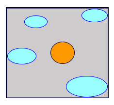
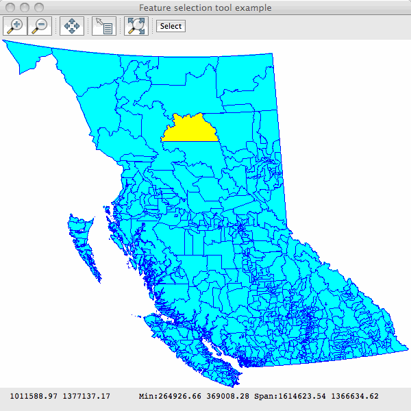
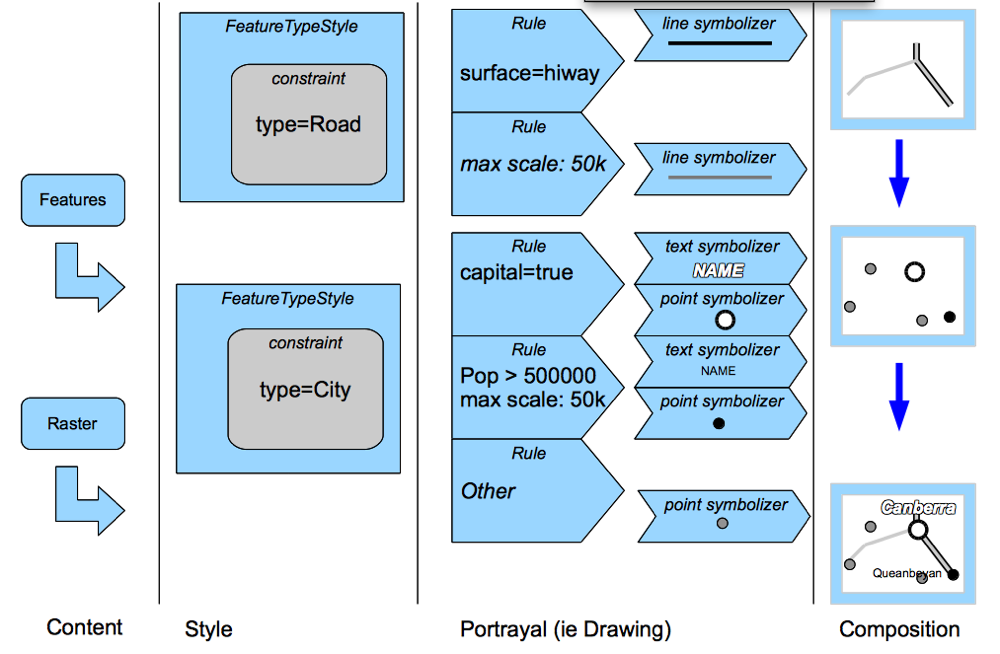

Map Style Tutorial¶
Style is all about looking good. In this lab we are going to learn the basics of how to make good looking maps.
Style¶
Please ensure your pom.xml includes the following:
<properties>
<geotools.version>2.7-M2</geotools.version>
</properties>
<dependencies>
<dependency>
<groupId>org.geotools</groupId>
<artifactId>gt-shapefile</artifactId>
<version>${geotools.version}</version>
</dependency>
<dependency>
<groupId>org.geotools</groupId>
<artifactId>gt-epsg-hsql</artifactId>
<version>${geotools.version}</version>
</dependency>
<dependency>
<groupId>org.geotools</groupId>
<artifactId>gt-swing</artifactId>
<version>${geotools.version}</version>
</dependency>
</dependencies>
Example¶
- The example code is available
- Directly from svn: StyleLab.java
- Included in the demo directory when you download the GeoTools source code
Main Application¶
Please create the file StyleLab.java
Copy and paste in the following code:
/* * GeoTools - The Open Source Java GIS Toolkit * http://geotools.org * * (C) 2006-2008, Open Source Geospatial Foundation (OSGeo) * * This file is hereby placed into the Public Domain. This means anyone is * free to do whatever they wish with this file. Use it well and enjoy! */ package org.geotools.tutorial.style; import java.awt.Color; import java.io.File; import org.geotools.data.FeatureSource; import org.geotools.data.FileDataStore; import org.geotools.data.FileDataStoreFinder; import org.geotools.factory.CommonFactoryFinder; import org.geotools.map.FeatureLayer; import org.geotools.map.Layer; import org.geotools.map.MapContent; import org.geotools.styling.FeatureTypeStyle; import org.geotools.styling.Fill; import org.geotools.styling.Graphic; import org.geotools.styling.LineSymbolizer; import org.geotools.styling.Mark; import org.geotools.styling.PointSymbolizer; import org.geotools.styling.PolygonSymbolizer; import org.geotools.styling.Rule; import org.geotools.styling.SLDParser; import org.geotools.styling.Stroke; import org.geotools.styling.Style; import org.geotools.styling.StyleFactory; import org.geotools.swing.JMapFrame; import org.geotools.swing.data.JFileDataStoreChooser; import org.geotools.swing.dialog.JExceptionReporter; import org.geotools.swing.styling.JSimpleStyleDialog; import org.opengis.feature.simple.SimpleFeatureType; import org.opengis.filter.FilterFactory; import com.vividsolutions.jts.geom.LineString; import com.vividsolutions.jts.geom.MultiLineString; import com.vividsolutions.jts.geom.MultiPolygon; import com.vividsolutions.jts.geom.Polygon; public class StyleLab { static StyleFactory styleFactory = CommonFactoryFinder.getStyleFactory(); static FilterFactory filterFactory = CommonFactoryFinder.getFilterFactory(); public static void main(String[] args) throws Exception { StyleLab me = new StyleLab(); me.displayShapefile(); }
Displaying a shapefile¶
If you have worked through the previous labs, most of this method will look familiar to you:
/** * Prompts the user for a shapefile (unless a filename is provided * on the command line; then creates a simple Style and displays * the shapefile on screen */ private void displayShapefile() throws Exception { File file = JFileDataStoreChooser.showOpenFile("shp", null); if (file == null) { return; } FileDataStore store = FileDataStoreFinder.getDataStore(file); FeatureSource featureSource = store.getFeatureSource(); // Create a map content and add our shapefile to it MapContent map = new MapContent(); map.setTitle("StyleLab"); // Create a basic Style to render the features Style style = createStyle(file, featureSource); // Add the features and the associated Style object to // the MapContent as a new Layer Layer layer = new FeatureLayer(featureSource, style); map.addLayer(layer); // Now display the map JMapFrame.showMap(map); }
The main thing to note is that we are calling a createStyle method to set a Style for the map layer. Let’s look at this method next.
Creating a style¶
This method first looks to see if there is an SLD document (Styled Layer Descriptor) associated with the shapefile. If it finds one it processes that file to create the style. Otherwise, it displays a JSimpleStyleDialog to prompt the user for style choices:
/** * Create a Style to display the features. If an SLD file is in the same * directory as the shapefile then we will create the Style by processing * this. Otherwise we display a JSimpleStyleDialog to prompt the user for * preferences. */ private Style createStyle(File file, FeatureSource featureSource) { File sld = toSLDFile(file); if (sld != null) { return createFromSLD(sld); } SimpleFeatureType schema = (SimpleFeatureType)featureSource.getSchema(); return JSimpleStyleDialog.showDialog(null, schema); }
The following two methods do the work of figuring out the SLD file name, based on the shapefile name, and processing the SLD document if one is found:
/** * Figure out if a valid SLD file is available. */ public File toSLDFile(File file) { String path = file.getAbsolutePath(); String base = path.substring(0,path.length()-4); String newPath = base + ".sld"; File sld = new File( newPath ); if( sld.exists() ){ return sld; } newPath = base + ".SLD"; sld = new File( newPath ); if( sld.exists() ){ return sld; } return null; } /** * Create a Style object from a definition in a SLD document */ private Style createFromSLD(File sld) { try { SLDParser stylereader = new SLDParser(styleFactory, sld.toURI().toURL()); Style[] style = stylereader.readXML(); return style[0]; } catch (Exception e) { JExceptionReporter.showDialog(e, "Problem creating style"); } return null; }
Creating styles By Hand¶
The methods that we’ve looked at so far are all we really need in this simple application. But now let’s look at how to create a style programmatically. This illustrates some of what is happening behind the scenes in the previous code. It also introduces you to StyleFactory and FilterFactory which provide a huge amount of flexibility in the styles that you can create.
In the code below, the first method works out what type of geometry we have in our shapefile: points, lines or polygons. It then calls a geometry-specific method to create a Style object.
/**
* Here is a programmatic alternative to using JSimpleStyleDialog to
* get a Style. This methods works out what sort of feature geometry
* we have in the shapefile and then delegates to an appropriate style
* creating method.
*/
private Style createStyle2(FeatureSource featureSource) {
SimpleFeatureType schema = (SimpleFeatureType)featureSource.getSchema();
Class geomType = schema.getGeometryDescriptor().getType().getBinding();
if (Polygon.class.isAssignableFrom(geomType)
|| MultiPolygon.class.isAssignableFrom(geomType)) {
return createPolygonStyle();
} else if (LineString.class.isAssignableFrom(geomType)
|| MultiLineString.class.isAssignableFrom(geomType)) {
return createLineStyle();
} else {
return createPointStyle();
}
}
/**
* Create a Style to draw polygon features with a thin blue outline and
* a cyan fill
*/
private Style createPolygonStyle() {
// create a partially opaque outline stroke
Stroke stroke = styleFactory.createStroke(
filterFactory.literal(Color.BLUE),
filterFactory.literal(1),
filterFactory.literal(0.5));
// create a partial opaque fill
Fill fill = styleFactory.createFill(
filterFactory.literal(Color.CYAN),
filterFactory.literal(0.5));
/*
* Setting the geometryPropertyName arg to null signals that we want to
* draw the default geomettry of features
*/
PolygonSymbolizer sym = styleFactory.createPolygonSymbolizer(stroke, fill, null);
Rule rule = styleFactory.createRule();
rule.symbolizers().add(sym);
FeatureTypeStyle fts = styleFactory.createFeatureTypeStyle(new Rule[]{rule});
Style style = styleFactory.createStyle();
style.featureTypeStyles().add(fts);
return style;
}
/**
* Create a Style to draw line features as thin blue lines
*/
private Style createLineStyle() {
Stroke stroke = styleFactory.createStroke(
filterFactory.literal(Color.BLUE),
filterFactory.literal(1));
/*
* Setting the geometryPropertyName arg to null signals that we want to
* draw the default geomettry of features
*/
LineSymbolizer sym = styleFactory.createLineSymbolizer(stroke, null);
Rule rule = styleFactory.createRule();
rule.symbolizers().add(sym);
FeatureTypeStyle fts = styleFactory.createFeatureTypeStyle(new Rule[]{rule});
Style style = styleFactory.createStyle();
style.featureTypeStyles().add(fts);
return style;
}
/**
* Create a Style to draw point features as circles with blue outlines
* and cyan fill
*/
private Style createPointStyle() {
Graphic gr = styleFactory.createDefaultGraphic();
Mark mark = styleFactory.getCircleMark();
mark.setStroke(styleFactory.createStroke(
filterFactory.literal(Color.BLUE), filterFactory.literal(1)));
mark.setFill(styleFactory.createFill(filterFactory.literal(Color.CYAN)));
gr.graphicalSymbols().clear();
gr.graphicalSymbols().add(mark);
gr.setSize(filterFactory.literal(5));
/*
* Setting the geometryPropertyName arg to null signals that we want to
* draw the default geomettry of features
*/
PointSymbolizer sym = styleFactory.createPointSymbolizer(gr, null);
Rule rule = styleFactory.createRule();
rule.symbolizers().add(sym);
FeatureTypeStyle fts = styleFactory.createFeatureTypeStyle(new Rule[]{rule});
Style style = styleFactory.createStyle();
style.featureTypeStyles().add(fts);
return style;
}
}
// docs end source
Things to note:
- Each of the geometry specific methods is creating a type of Symbolizer: the class that controls how features are rendered
- Each method wraps the symbolizer in a Rule, then a FeatureTypeStyle, and finally a Style
- In real life, it is common to have more than one Rule in a FeatureTypeStyle. For example, we might create one rule to draw features when the map is zoomed out, and another for when we are displaying fine details.
Selection¶
This tutorial brings together many of the techniques and classes that we’ve covered in the previous examples. It is best if you have already worked through at least the quickstart, csv2shp and style tutorials.
We are going to:
- Create a custom map cursor tool to select features when the user clicks the map
- Add a toolbar button to JMapFrame to launch this tool
- Use a Filter to find which features were under, or near the mouse click
- Create rendering styles to draw selected and unselected features in different colours
Dependencies¶
Please ensure your pom.xml includes the following:
<properties>
<geotools.version>2.7-SNAPSHOT</geotools.version>
</properties>
<dependencies>
<dependency>
<groupId>org.geotools</groupId>
<artifactId>gt-shapefile</artifactId>
<version>${geotools.version}</version>
</dependency>
<dependency>
<groupId>org.geotools</groupId>
<artifactId>gt-epsg-hsql</artifactId>
<version>${geotools.version}</version>
</dependency>
<dependency>
<groupId>org.geotools</groupId>
<artifactId>gt-swing</artifactId>
<version>${geotools.version}</version>
</dependency>
</dependencies>
Example¶
- The example code is available
- Directly from svn: SelectionLab.java
- Included in the demo directory when you download the GeoTools source code
Main Application¶
Please create the file SelectionLab.java
Copy and paste in the following code:
/* * GeoTools - The Open Source Java GIS Toolkit * http://geotools.org * * (C) 2006-2008, Open Source Geospatial Foundation (OSGeo) * * This file is hereby placed into the Public Domain. This means anyone is * free to do whatever they wish with this file. Use it well and enjoy! */ package org.geotools.tutorial.style; import java.awt.Color; import java.awt.Point; import java.awt.Rectangle; import java.awt.event.ActionEvent; import java.awt.event.ActionListener; import java.awt.geom.AffineTransform; import java.awt.geom.Rectangle2D; import java.io.File; import java.util.HashSet; import java.util.Set; import javax.swing.JButton; import javax.swing.JToolBar; import org.geotools.data.FileDataStore; import org.geotools.data.FileDataStoreFinder; import org.geotools.data.simple.SimpleFeatureCollection; import org.geotools.data.simple.SimpleFeatureIterator; import org.geotools.data.simple.SimpleFeatureSource; import org.geotools.factory.CommonFactoryFinder; import org.geotools.geometry.jts.ReferencedEnvelope; import org.geotools.map.FeatureLayer; import org.geotools.map.Layer; import org.geotools.map.MapContent; import org.geotools.styling.FeatureTypeStyle; import org.geotools.styling.Fill; import org.geotools.styling.Graphic; import org.geotools.styling.Mark; import org.geotools.styling.Rule; import org.geotools.styling.Stroke; import org.geotools.styling.Style; import org.geotools.styling.StyleFactory; import org.geotools.styling.Symbolizer; import org.geotools.swing.JMapFrame; import org.geotools.swing.data.JFileDataStoreChooser; import org.geotools.swing.event.MapMouseEvent; import org.geotools.swing.tool.CursorTool; import org.opengis.feature.simple.SimpleFeature; import org.opengis.feature.type.GeometryDescriptor; import org.opengis.filter.Filter; import org.opengis.filter.FilterFactory2; import org.opengis.filter.identity.FeatureId; import com.vividsolutions.jts.geom.LineString; import com.vividsolutions.jts.geom.MultiLineString; import com.vividsolutions.jts.geom.MultiPolygon; import com.vividsolutions.jts.geom.Polygon; /** * In this example we create a map tool to select a feature clicked * with the mouse. The selected feature will be painted yellow. * * @source $URL: http://svn.osgeo.org/geotools/trunk/demo/example/src/main/java/org/geotools/demo/SelectionLab.java $ */ public class SelectionLab { /* * Factories that we will use to create style and filter objects */ private StyleFactory sf = CommonFactoryFinder.getStyleFactory(); private FilterFactory2 ff = CommonFactoryFinder.getFilterFactory2(); /* * Convenient constants for the type of feature geometry in the shapefile */ private enum GeomType { POINT, LINE, POLYGON }; /* * Some default style variables */ private static final Color LINE_COLOUR = Color.BLUE; private static final Color FILL_COLOUR = Color.CYAN; private static final Color SELECTED_COLOUR = Color.YELLOW; private static final float OPACITY = 1.0f; private static final float LINE_WIDTH = 1.0f; private static final float POINT_SIZE = 10.0f; private JMapFrame mapFrame; private SimpleFeatureSource featureSource; private String geometryAttributeName; private GeomType geometryType; /* * The application method */ public static void main(String[] args) throws Exception { SelectionLab me = new SelectionLab(); File file = JFileDataStoreChooser.showOpenFile("shp", null); if (file == null) { return; } me.displayShapefile(file); }
Much of this should look familiar to you from the style tutorial. We’ve added some constants and class variables that we’ll use when creating styles.
A subtle difference is that we are now using FilterFactory2 instead of FilterFactory. This class adds additional methods, one of which we’ll need when selecting features based on a mouse click.
Shapefile viewer with custom map tool¶
Next we add the displayShapefile method which is also very similar to the one that we used in style tutorial.
/**
* This method connects to the shapefile; retrieves information about
* its features; creates a map frame to display the shapefile and adds
* a custom feature selection tool to the toolbar of the map frame.
*/
public void displayShapefile(File file) throws Exception {
FileDataStore store = FileDataStoreFinder.getDataStore(file);
featureSource = store.getFeatureSource();
setGeometry();
/*
* Create the JMapFrame and set it to display the shapefile's features
* with a default line and colour style
*/
MapContent map = new MapContent();
map.setTitle("Feature selection tool example");
Style style = createDefaultStyle();
Layer layer = new FeatureLayer(featureSource, style);
map.addLayer(layer);
mapFrame = new JMapFrame(map);
mapFrame.enableToolBar(true);
mapFrame.enableStatusBar(true);
/*
* Before making the map frame visible we add a new button to its
* toolbar for our custom feature selection tool
*/
JToolBar toolBar = mapFrame.getToolBar();
JButton btn = new JButton("Select");
toolBar.addSeparator();
toolBar.add(btn);
/*
* When the user clicks the button we want to enable
* our custom feature selection tool. Since the only
* mouse action we are intersted in is 'clicked', and
* we are not creating control icons or cursors here,
* we can just create our tool as an anonymous sub-class
* of CursorTool.
*/
btn.addActionListener(new ActionListener() {
public void actionPerformed(ActionEvent e) {
mapFrame.getMapPane().setCursorTool(
new CursorTool() {
@Override
public void onMouseClicked(MapMouseEvent ev) {
selectFeatures(ev);
}
});
}
});
/**
* Finally, we display the map frame. When it is closed
* this application will exit.
*/
mapFrame.setSize(600, 600);
mapFrame.setVisible(true);
}
Note that we are customizing the JMapFrame by adding a button to its toolbar. When the user clicks this button a new CursorTool is set for the map window. This tool has just one method that responds to a mouse click in the map area.
What features did the user click on ?¶
Next we’ll add the method that is called when the user is in selection mode. Our custom toolbar button has been pressed, and the user has now clicked somewhere on the map.
The method first creates a 5x5 pixel wide rectangle around the mouse position to make it easier to select point and line features. This is transformed from pixel coordinates to world coordinates and used to create a Filter to identify features under, or close to, the mouse click.
/** * This method is called by our feature selection tool when * the user has clicked on the map. * * @param pos map (world) coordinates of the mouse cursor */ void selectFeatures(MapMouseEvent ev) { System.out.println("Mouse click at: " + ev.getMapPosition()); /* * Construct a 5x5 pixel rectangle centred on the mouse click position */ Point screenPos = ev.getPoint(); Rectangle screenRect = new Rectangle(screenPos.x-2, screenPos.y-2, 5, 5); /* * Transform the screen rectangle into bounding box in the coordinate * reference system of our map context. Note: we are using a naive method * here but GeoTools also offers other, more accurate methods. */ AffineTransform screenToWorld = mapFrame.getMapPane().getScreenToWorldTransform(); Rectangle2D worldRect = screenToWorld.createTransformedShape(screenRect).getBounds2D(); ReferencedEnvelope bbox = new ReferencedEnvelope( worldRect, mapFrame.getMapContent().getCoordinateReferenceSystem()); /* * Create a Filter to select features that intersect with * the bounding box */ Filter filter = ff.intersects(ff.property(geometryAttributeName), ff.literal(bbox)); /* * Use the filter to identify the selected features */ try { SimpleFeatureCollection selectedFeatures = featureSource.getFeatures(filter); SimpleFeatureIterator iter = selectedFeatures.features(); Set<FeatureId> IDs = new HashSet<FeatureId>(); try { while (iter.hasNext()) { SimpleFeature feature = iter.next(); IDs.add(feature.getIdentifier()); System.out.println(" " + feature.getIdentifier()); } } finally { iter.close(); } if (IDs.isEmpty()) { System.out.println(" no feature selected"); } displaySelectedFeatures(IDs); } catch (Exception ex) { ex.printStackTrace(); return; } }
Note that we are using an intersects filter and not a bbox (bounding box) filter in this method. A bounding box filter is very fast, but it would only test if the rectangle around the mouse click is within the envelope, as opposed to the boundary, of each feature. For this application, that’s not what we want to do. To see why, consider this example...
The blue shapes are parts of a single MultiPolygon which is the standard geometry type for polygonal features in shapefiles. Using a bounding box filter, clicking in the orange shape would select it plus all of the blue shapes because the click region is within their envelope (the grey rectangle).
Creating a Style based on the selection¶
Once the method above has worked out which features were selected, if any, it passes their FeatureIds to the displaySelected method. This calls one of two Style creating methods and then redisplays the map with the updated Style:
/** * Sets the display to paint selected features yellow and * unselected features in the default style. * * @param IDs identifiers of currently selected features */ public void displaySelectedFeatures(Set<FeatureId> IDs) { Style style; if (IDs.isEmpty()) { style = createDefaultStyle(); } else { style = createSelectedStyle(IDs); } Layer layer = mapFrame.getMapContent().layers().get(0); ((FeatureLayer) layer).setStyle(style); mapFrame.getMapPane().repaint(); }
The default style¶
This method creates a Style with a single Rule for all features using the line and fill constants defined at the top of the class:
/** * Create a default Style for feature display */ private Style createDefaultStyle() { Rule rule = createRule(LINE_COLOUR, FILL_COLOUR); FeatureTypeStyle fts = sf.createFeatureTypeStyle(); fts.rules().add(rule); Style style = sf.createStyle(); style.featureTypeStyles().add(fts); return style; }
The selected style¶
This method creates a Style with one Rule for selected features, to paint them in a highlight colour, and a second Rule for unselected features. Both rules are then wrapped in the Style object.
/** * Create a Style where features with given IDs are painted * yellow, while others are painted with the default colors. */ private Style createSelectedStyle(Set<FeatureId> IDs) { Rule selectedRule = createRule(SELECTED_COLOUR, SELECTED_COLOUR); selectedRule.setFilter(ff.id(IDs)); Rule otherRule = createRule(LINE_COLOUR, FILL_COLOUR); otherRule.setElseFilter(true); FeatureTypeStyle fts = sf.createFeatureTypeStyle(); fts.rules().add(selectedRule); fts.rules().add(otherRule); Style style = sf.createStyle(); style.featureTypeStyles().add(fts); return style; }
Note that the first Rule includes a Filter, created with the FilterFactory2.id method. This means the rule will only apply to the selected features.
The second rule is flagged as an alternative (applies to all other features) with the setElseFilter method.
Creating a Rule and Symbolizer¶
OK, we’re nearly at the end !
Here is the method createRule. This is where the Symbolizer is created that describes how to draw a feature.
/** * Helper for createXXXStyle methods. Creates a new Rule containing * a Symbolizer tailored to the geometry type of the features that * we are displaying. */ private Rule createRule(Color outlineColor, Color fillColor) { Symbolizer symbolizer = null; Fill fill = null; Stroke stroke = sf.createStroke(ff.literal(outlineColor), ff.literal(LINE_WIDTH)); switch (geometryType) { case POLYGON: fill = sf.createFill(ff.literal(fillColor), ff.literal(OPACITY)); symbolizer = sf.createPolygonSymbolizer(stroke, fill, geometryAttributeName); break; case LINE: symbolizer = sf.createLineSymbolizer(stroke, geometryAttributeName); break; case POINT: fill = sf.createFill(ff.literal(fillColor), ff.literal(OPACITY)); Mark mark = sf.getCircleMark(); mark.setFill(fill); mark.setStroke(stroke); Graphic graphic = sf.createDefaultGraphic(); graphic.graphicalSymbols().clear(); graphic.graphicalSymbols().add(mark); graphic.setSize(ff.literal(POINT_SIZE)); symbolizer = sf.createPointSymbolizer(graphic, geometryAttributeName); } Rule rule = sf.createRule(); rule.symbolizers().add(symbolizer); return rule; }
Geometry type of the shapefile features¶
Finally (yes, really) the createRule method above needs to know what sort of feature geometry we are dealing with to create the appropriate class of Symbolizer. Here is the method that works that out:
/** * Retrieve information about the feature geometry */ private void setGeometry() { GeometryDescriptor geomDesc = featureSource.getSchema().getGeometryDescriptor(); geometryAttributeName = geomDesc.getLocalName(); Class<?> clazz = geomDesc.getType().getBinding(); if (Polygon.class.isAssignableFrom(clazz) || MultiPolygon.class.isAssignableFrom(clazz)) { geometryType = GeomType.POLYGON; } else if (LineString.class.isAssignableFrom(clazz) || MultiLineString.class.isAssignableFrom(clazz)) { geometryType = GeomType.LINE; } else { geometryType = GeomType.POINT; } }
Running the application¶
Here is the program displaying the bc_voting_areas shapefile (included in the uDig sample data) with one feature (polygon) selected:
Things to try¶
In Geometry and CRS tutorial we saw how to change the Coordinate Reference System of a MapContent. Try the following:
- Modify this application so that you can change the CRS in which the features are displayed.
- Display the bc_voting_areas shapefile and change the CRS to EPSG:4326
- Now try to use the selection tool. You will find that it no longer works !
See if you can you figure out why the tool isn’t working and how to fix it.
There is actually some amazing style generation code included with GeoTools. Add a dependency on the gt-brewer module and having a look at the ColorBrewer class.
The class works by first asking you to calculate a categorization using one of the categorization functions on a feature collection; you can then pass the resulting categorization on to color brewer and it will generate a style for you based predefined palettes.
For more information visit: http://colorbrewer2.org/
Style Layer Descriptor¶
Style is all about looking good, and this section is a box of crayons, learning how to make a map look good is the practice of cartography.
Actually cartography is focused on using a map to communicate, choosing what information to include, being strict about removing information that is off topic and so on.
Occasionally organizations will have cartographic standards that must be followed. How thick lines must be exactly, what shade of blue to use for water. Having a cartographic standard is a great time saver ‐ the rest of us are going to have to be creative.
We do have one kind of standard to help us though: the Styled Layer Descriptor (SLD) standard ‐ this document defines a nice data structure for Style which we have captured in the form of Java objects. If you get stuck at any point please review the SLD specification as it defines all the ideas we are going to work with today.
At its heart it focuses on two things:
- Style Layer Descriptor
- Covers the definition of “ layers ” or presentations of feature content.
- Symbology Encoding
- Covers portrayal or how to draw the features
Controlling the Rendering Process¶
This is the heart of map making with GeoTools (or indeed with open standards).
{kind=link}
It helps if you imagine a big funnel throwing all the features at your map at once. This is going to work kind of like those machines for sorting coins ‐ early stages of the machine are going to select a feature; once we are sure what kind of feature we have we are going to use the feature to control actual drawing onto different bitmaps. Finally we will gather up all the different bitmaps (and slap some labels on top) to produce a final image.
Rendering occurs in the following stages:
- Content Selection: selecting and filtering
- Portrayal: actual drawing
- Composition: putting everything together
The first line of defence is “ FeatureTypeStyle ”, it makes use of a constraint to select what FeatureType you want to work with. If you don’t care use the FeatureType with the name Feature as kind of a wild card (since everything extends Feature).
Next up we have Rules. Rules actually use Filter (from the Filter tutorial) to perform strict checks about what is going to get drawn. In addition to checking feature attributes with Filter, a Rule is able to check the current scale of the map. Finally there is an Other rule to catch any features left over from earlier Rules.
Now that a Rule has selected features for us to work with we can get down to drawing in the Portrayal step. The renderer will go through a list of symbolizers (for a Rule) and draw the results. The symbolizers are just a list of draw instructions to be done in order. The symbolizers use expressions to define width and color ‐ allowing you to dynamically generate the appearance on a feature by feature basis!
The only symbolizer which is not drawn in order is TextSymbolizer which gathers up text labels for the next step.
Finally in the composition step ‐ will take all the content drawn during portrayal and squish them together into a final image. Finally the text labels are generated from all layers and drawn on top of the map (taking care to avoid overlapping any text).